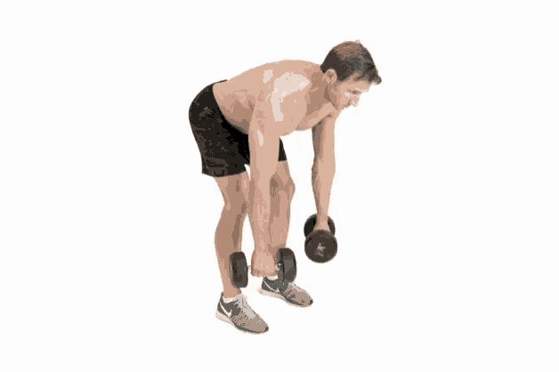
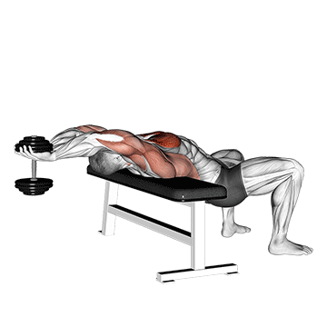
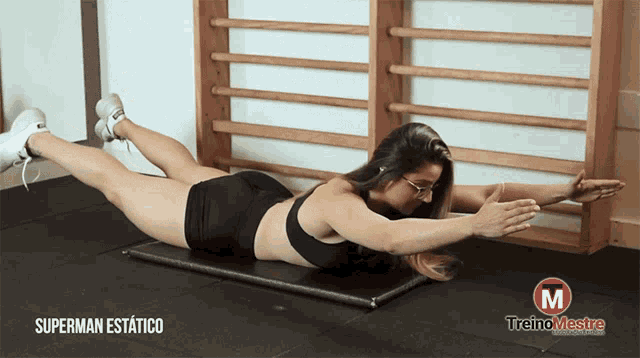
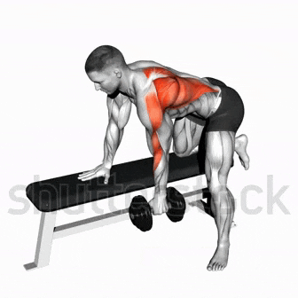

1 - Remada Curvada com Halteres (ou garrafas de água)
Execução: Segure um peso em cada mão, com o tronco inclinado para frente e as costas retas. Puxe os pesos em direção ao abdômen, mantendo os cotovelos próximos ao corpo, e desça devagar.

Dica: Mantenha o abdômen contraído para proteger a lombar e foque no movimento controlado para ativar bem os músculos das costas.
2 - Pullover com Halter (ou garrafa de água)
Execução: Deite-se de costas em um banco ou no chão, segurando um halter com as duas mãos acima do peito. Com os braços levemente flexionados, leve o peso para trás da cabeça até sentir um leve alongamento nas costas, depois volte à posição inicial.

Dica: Concentre-se em controlar o movimento e manter os braços em uma posição estável, sem deixar os cotovelos se abrirem demais. Esse exercício trabalha o dorsal e ajuda a abrir a caixa torácica.
3 - Superman Estático
Execução: Deite-se de barriga para baixo com os braços esticados à frente. Eleve o peito, braços e pernas do chão ao mesmo tempo, contraindo os músculos das costas, e depois abaixe devagar.

Dica: Esse exercício fortalece a lombar e toda a região das costas. Mantenha o movimento lento e controlado para evitar tensão excessiva na lombar.
4 - Remada Unilateral com Halteres (ou garrafa de água)
Execução: Apoie um joelho e uma mão em um banco ou cadeira, segurando o peso com a outra mão. Puxe o peso em direção ao quadril, mantendo o cotovelo próximo ao corpo, e desça devagar.

Dica: Concentre-se em contrair a escápula no movimento de subida para maximizar o trabalho dos músculos das costas.